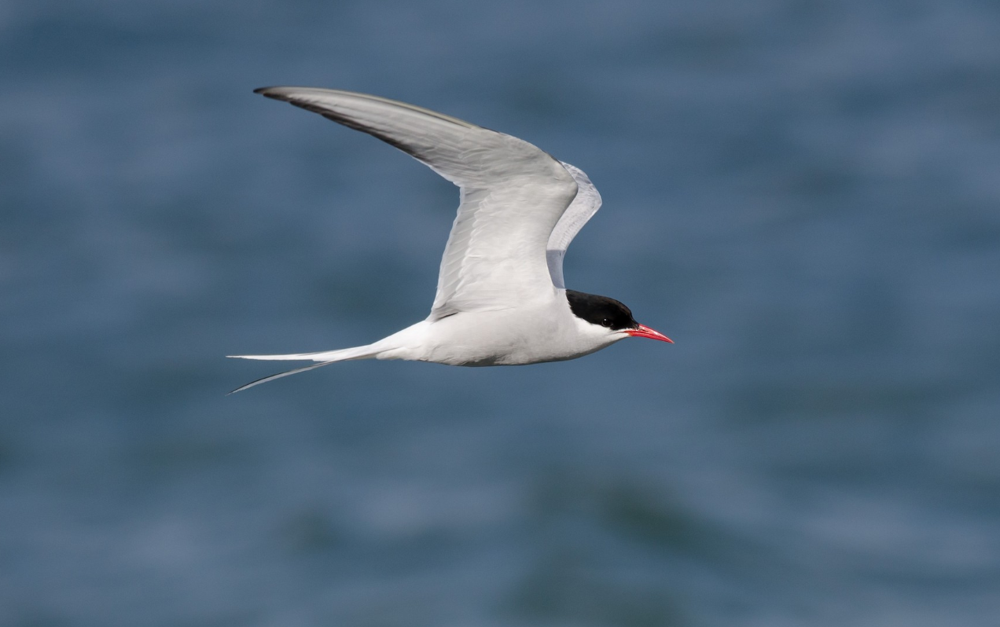
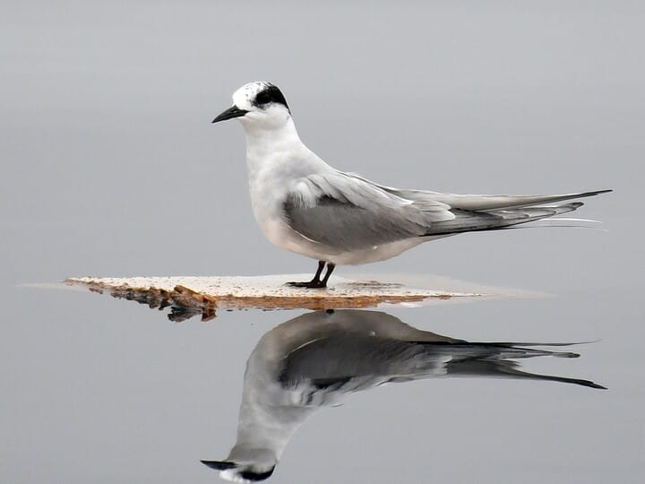
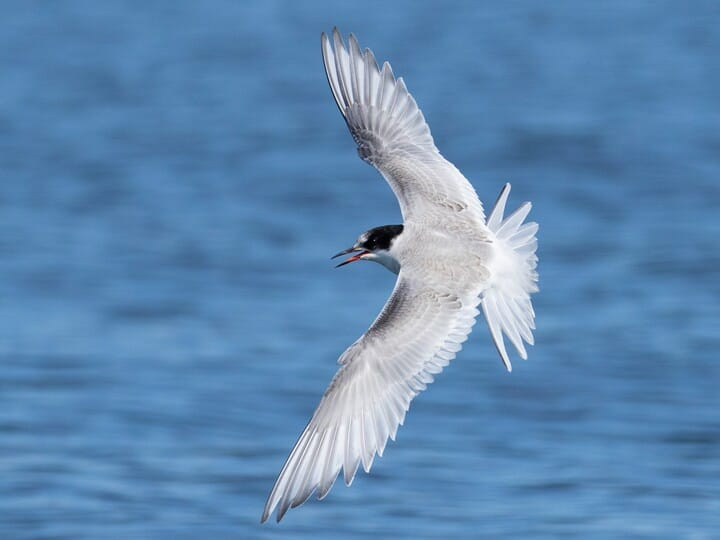
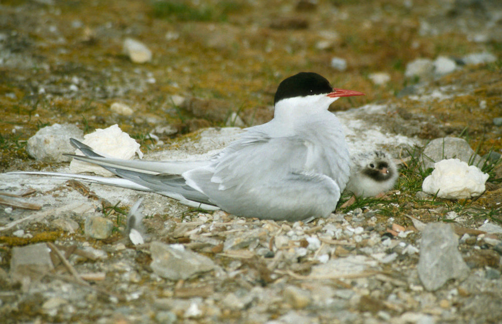

The breeding adult Arctic Tern, a species characterized by its small size and sleek build, presents angular wings that reveal a silvery hue on their lower surfaces. Notably, breeding adults boast a slender, crimson-colored bill and a gray-toned belly, with a distinguishing long, forked tail.

Adult non-breeding Arctic Terns maintain their slender builds, marked by short legs. These non-breeding adults has a notable distinction, as their once-prominent black cap, extending rearward from the eye, experiences a reduction. Also, both their legs and bill transition to a black hue.

Juvenile Arctic Terns display a unique and distinctive appearance, with a back characterized by a scaly pattern. Their crown has a smudgy black marking, accompanied by a white forehead, making the distinction between juveniles and adults easier.
Arctic Terns, similar to other terns, are lively birds that often make loud and sharp sounds. When they are searching for food or flying away from their nest area, they often make a high-pitched sound that goes like 'kip.' When they are scared or worried, they make a loud, high-pitched noise that sounds like a scream. This scream is a bit higher and less harsh compared to the similar-sounding noise made by Common Terns.
Arctic Terns are slender birds with long, pointy wings. They have a small, round head with a steep forehead and very short legs. When they're breeding, adult Arctic Terns have a tail that's split into two parts.

Arctic Terns have a unique way of finding food. They fly slowly upward, pause in the air for a moment, and then swoop down to catch prey just below the water's surface. Sometimes, they even surprise other birds by swooping at them, causing them to drop their food, which the Arctic Terns then steal. These birds rarely rest directly on the water, but you might spot them perched on floating logs or debris.
Arctic Terns are excellent fliers, known for their grace and buoyancy in the air. They often hover over places where they hunt for food or where they have nests. They mainly eat small fish, which they either grab from the water's surface or dive about 20 inches below the surface to catch. After catching a fish, they rise out of the water, shake themselves off, and swallow the fish head-first. However, they have to watch out for birds like jaegers and gulls that try to steal their catch.
During breeding season, Arctic Terns gather in noisy groups usually refered to as colonies. Male terns catch the attention of females by flying low over the colony with fish in their bills, pointing them downward. Interested females follow the males while flying. The courting process continues on the ground, with the male tipping his head down and holding his wings out. He offers food to the female, and as they bond, he becomes the primary provider of food. Pairs stay together for the entire breeding season.
Adult Arctic Terns are quite protective of their nest sites. When other birds come too close, the terns first use a "bent posture," tilting their heads down and holding their wings out. If the intruder doesn't back off, the terns become more aggressive, raising their bills and spreading their wings. In some cases, they even fight the intruder, both on the ground and in the air. If humans enter their breeding colony, Arctic Terns may dive towards them, peck their heads, and even leave a "message" behind.